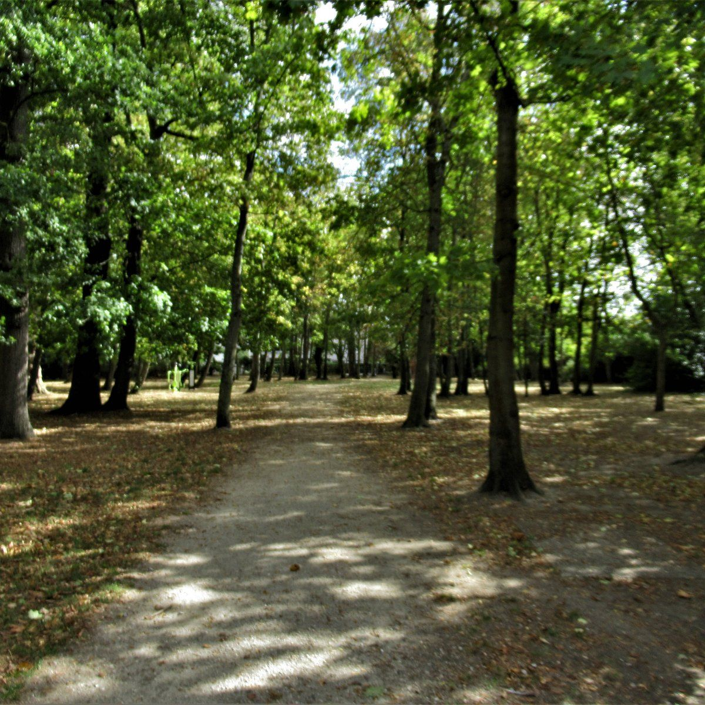
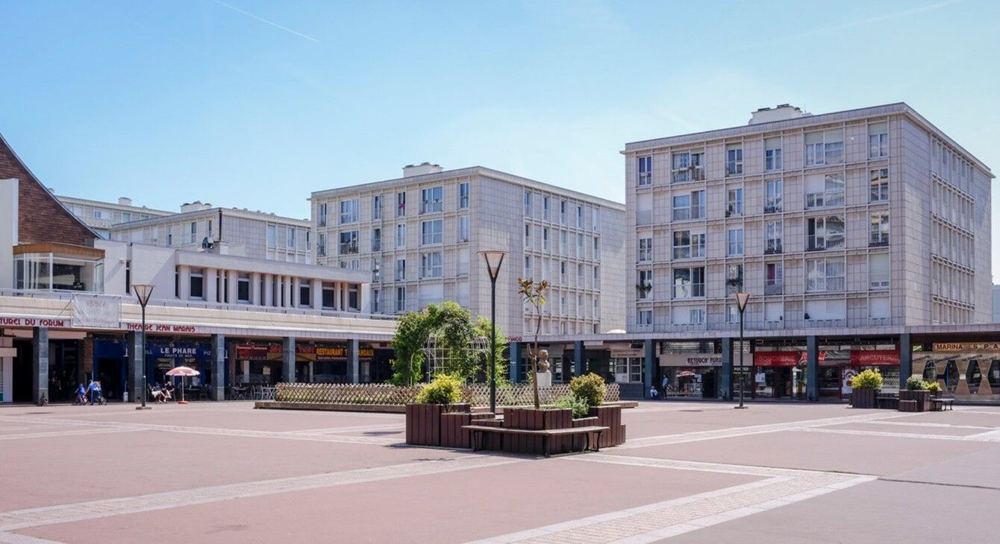
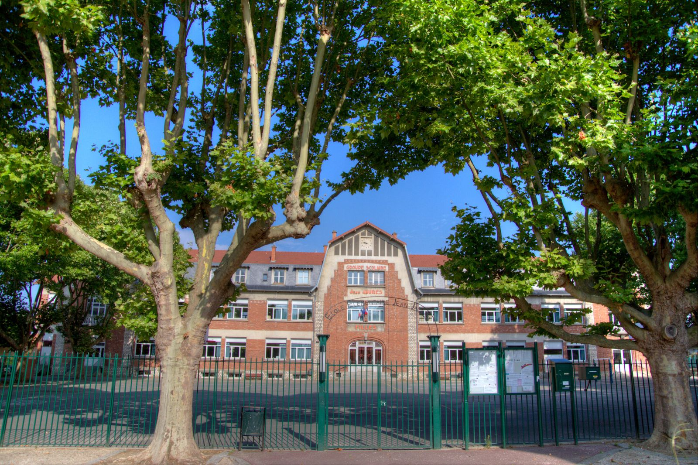

Barrachin park
About 1 hectare between avenue Terré and rue Danielle Casanova, with a playground, a track to learn cycling and free fitness equipment.
Saint-Gratien is a quiet residential town with a lot of nature: 34 hectares of green spaces and 13 parks and gardens. Shops, schools, parks and the train station are all close to each other. This page gathers useful information for the people who live here.

About 1 hectare between avenue Terré and rue Danielle Casanova, with a playground, a track to learn cycling and free fitness equipment.

Around place François Truffaut, with the cinema Les Toiles (3 screens, renovated in 2017).

One of the schools of the town, close to the city centre.
Besides Barrachin park, you can walk on the Balade suspendue (3.5 hectares above the boulevard du Parisis, with a fitness trail of 9 stations), relax at the Jardin du Petit Lac or meet friends at the Jardin Léon Fontaine, which has a skatepark and a pétanque area.
Parks are open from 9 h to 22 h from April to September, and from 9 h to 18 h from October to March.
The town market takes place on Wednesday and Sunday mornings, place Roger Salengro. You can find fruit, vegetables, meat and fish.
About 80 associations are active in Saint-Gratien: sport, culture, solidarity... Every year at the beginning of September, the Journée des associations on place François Truffaut lets residents discover them and sign up.
The town has two libraries: the Théodore Monod library (3 allée Lino Ventura) and the smaller Motordu library (33 rue des Raguenets). Together they offer more than 51,000 books, 11,000 CDs and 7,500 DVDs.